Study no. 01
The fine art of drawing
Charcoal, ink, and natural talent. Bringing life to paper with delicate strokes and disciplined anatomy; a line becomes gesture, a shadow becomes emotion.
Abdallah’s Studio & Personal Archive — Cairo / Blue Hour
Draftsman, developer, and seeker of quiet beauty. Creating between the precision of code and the fluidity of charcoal. An explorer of systems, stars, and stories.
Somewhere in Cairo, with a book left open
and a coffee slowly growing cold.

“There is an entire world
in the things we overlook.”
Collected light. Borrowed stillness.
✧The Astronomical Observatory · Solar Orbit
✦Marking each passing second until the next solar return in Cairo · Abdallah’s Birthday Archive.
01 / Disciplines & devotions
Eight drawers. The same curiosity.
These are the things I return to.
Charcoal, ink, and natural talent. Bringing life to paper with delicate strokes and disciplined anatomy; a line becomes gesture, a shadow becomes emotion.
Elegant software, careful logic, and ethical security research. Dissecting systems beneath their surface, hunting bugs, and writing resilient code.
Visual identities honed across studios and creative agencies. Sculpting videos through cinematic rhythm, color palettes, and emotional soundscapes.
A soft purr, a slow blink, a small life choosing to trust you. A deep compassion for animals and a special tenderness for raising and caring for cats.
The deep expanse of space and stars by night; artisanal single-origin brewing by morning. Fascinated by cosmic scale and the craft of making good coffee.
A simple, pure love for riding bicycles. Gliding through quiet streets as the blue hour settles, feeling the breeze, and enjoying the rhythm of solitary motion.
Countries I long to visit one day. I haven't traveled there yet, but I dream of wandering Japan’s ancient wooden shrines and the boundless open highways of the USA.
Over forty novels and works of literature read and treasured. Seeking philosophy, quiet introspection, and lives borrowed from timeless pages.
02 / The personal commonplace
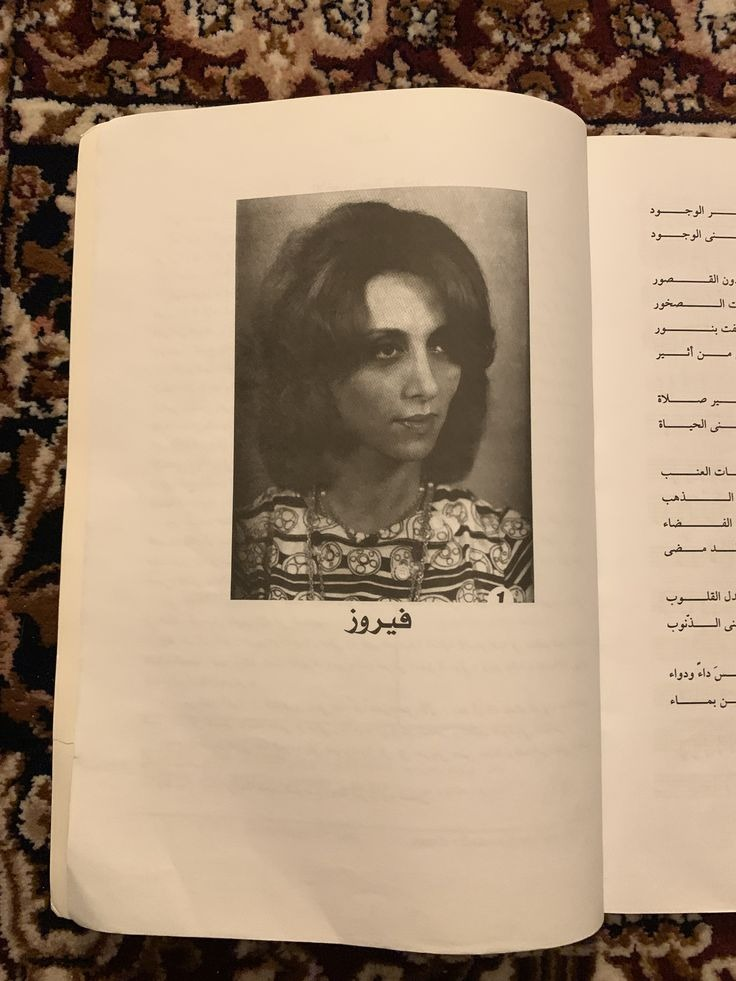
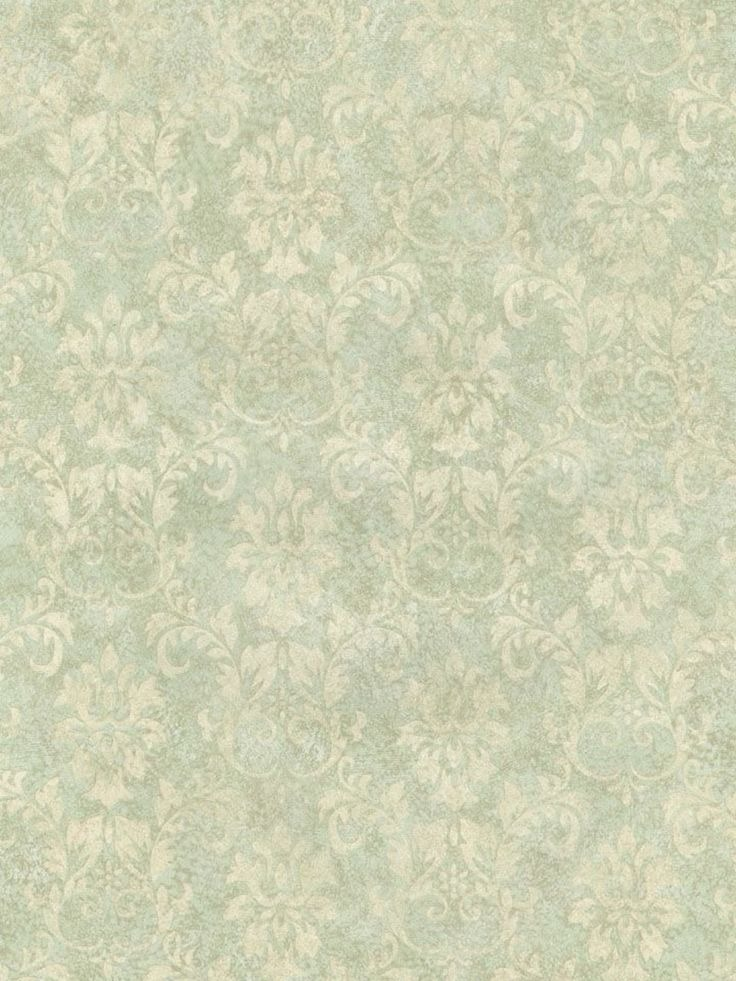
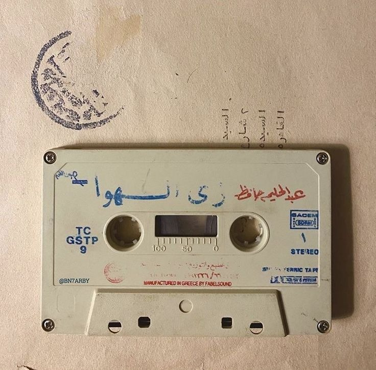
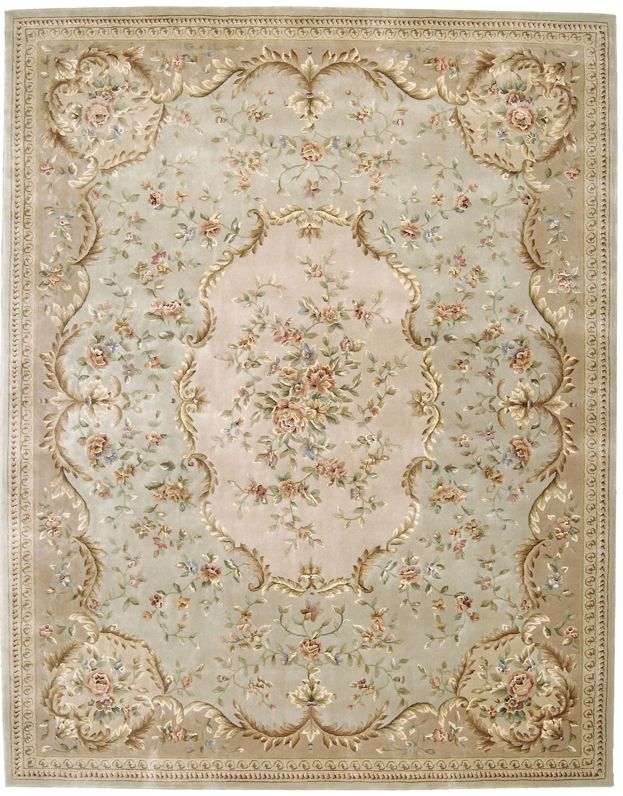
03 / The listening room
Some voices are not simply heard. They become a place to live.
✳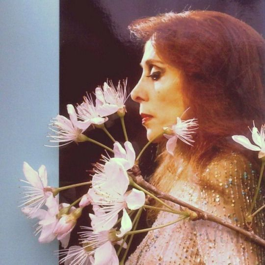
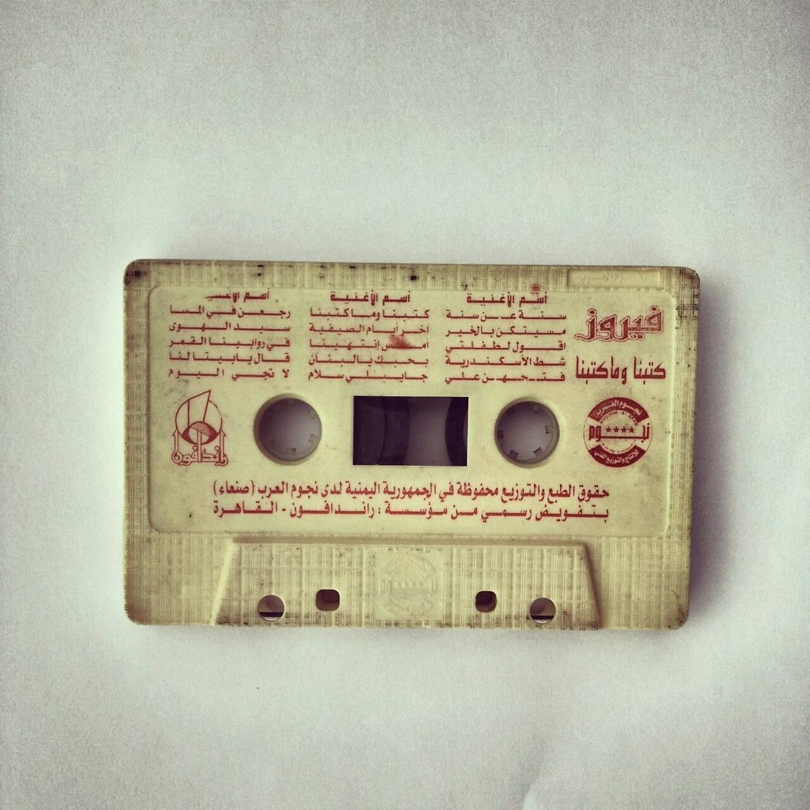
كتبنا وما كتبنا
The voice of morning light.
I love Fairuz for the way her voice makes room for silence. There is autumn in it, and the soft ache of something familiar just beyond reach. Her songs hold the eternal spirit of Levantine poetry: a window, a street, a love that time has not quite taken away.
When I draw, she reminds me that restraint can carry the deepest feeling. When I listen, the morning becomes less hurried. Memory finds its own light.
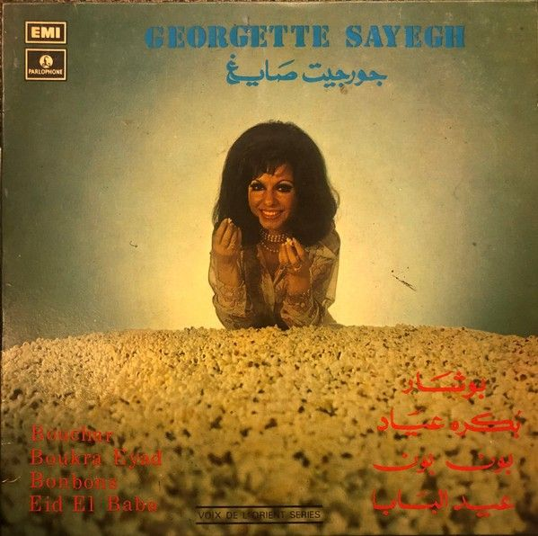
Sa'ah Natarni
A golden-era enchantress.
Georgette brings another kind of light: theatrical, tender, alive with character. In Sa’ah Natarni (ساعة نطرني), waiting becomes something you can almost touch. I love the feeling suspended between a phrase and its answer, the humanity inside every small turn of the voice.
She reminds me why rhythm matters—in a film, in a story, in a life. A moment does not need to be grand to stay with you. It only needs to be true.
Direct turntable playback from the studio archives.
Click any track on the right or press Play above.
The evening selection
On waiting, tenderness, and the spaces in between.
Find on Spotify ↗The Spotify companion / Full discography
Abdallah’s Curated Playlist ↗04 / The reading ledger & cinema
Novels & literary works
And still, so many doors unopened.
I read for the lives I cannot live in a single lifetime. Timeless novels, philosophy, and classical manuscripts offer a slower kind of discovery: the strange relief of finding your own thoughts in someone else’s words.
Cinema is another shelf in the same library. A cut, a color, a lingering frame—another way to understand what it means to be here.
My cinema diary on Letterboxd ↗
A note in the margin
“A room, a page, a little more time.”
Fragments from the personal archive
04.1 / The core library
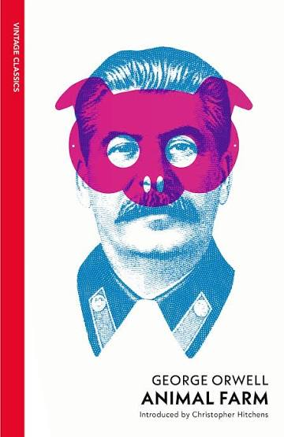
On corrupted ideals, power, and the quiet fragility of memory.
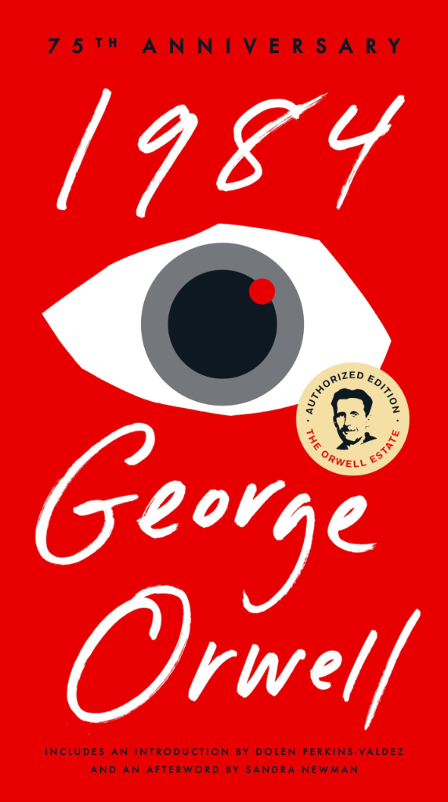
The quiet terror of a world where truth itself is manufactured.
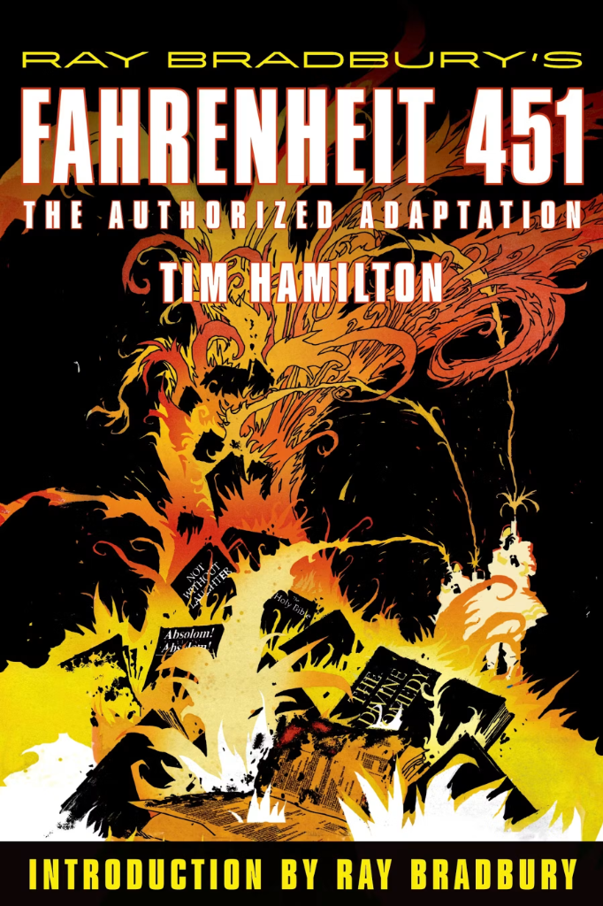
When burning books is easier than confronting the silence within.
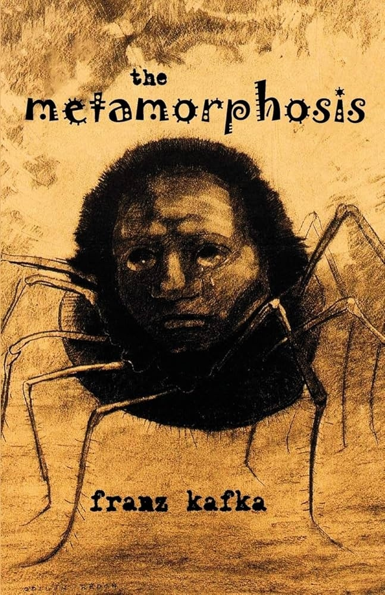
The profound ache of sudden alienation and familial estrangement.
05 / Social orbit & dialogue
Our paths may cross.
A song to share, a film to recommend, a thought worth keeping. Find me in these little corners of the internet.
For a conversation, a quiet hello on Instagram is enough.
An unfinished archive. A life still becoming.
Made of curiosity, care, and a little blue hour.